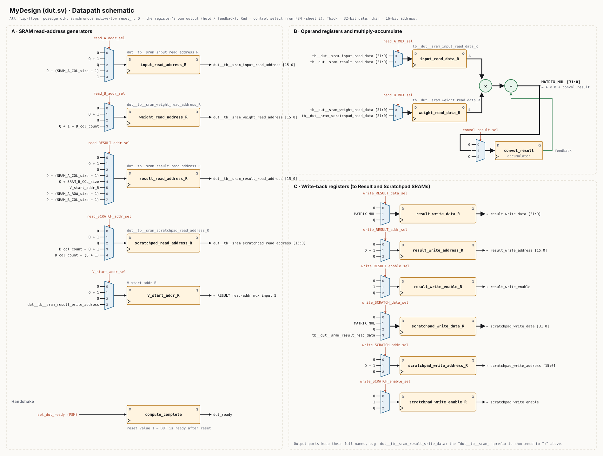
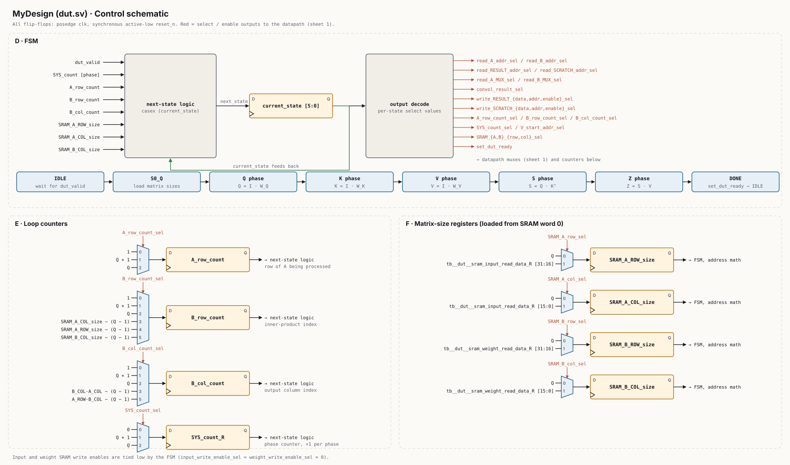

RTL & Physical Design
Pipelined Transformer Self-Attention in Hardware
NC State · ASIC Design
SystemVerilogDesign CompilerNangate 45 nm
Problem
Compute Transformer self-attention efficiently in hardware.
What I did
- Designed a pipelined datapath that computes the Query, Key and Value projections, then the score and attention matrices, from inputs and weights stored in SRAM.
- Verified it in ModelSim against reference results across 4 test cases.
- Synthesized it in Design Compiler (Nangate 45 nm) and closed setup and hold timing at a 5 ns clock.
Result
217/217 result checks passed; 3,430 cycles per run; ~13.7K cells and ~14.7K µm²; area–performance efficiency of 3.97 × 10⁻⁹ ns⁻¹·µm⁻².
RTL schematic
Drawn from dut.sv: every flip-flop, mux and select signal in the design. Click a sheet to open it full size.
Datapath schematic

Control schematic
